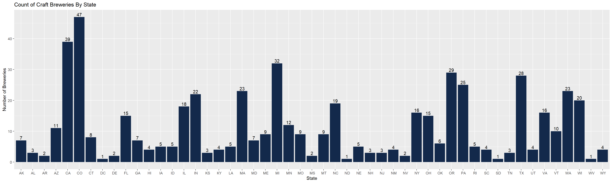
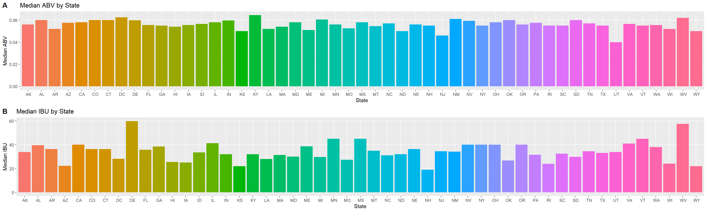
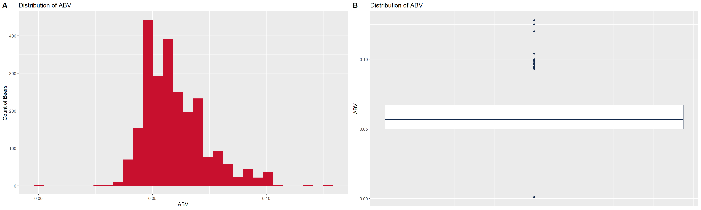
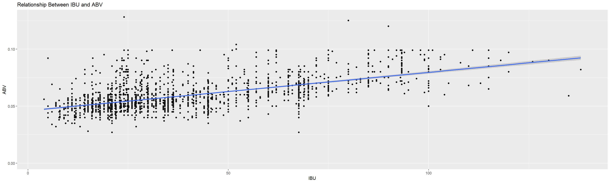
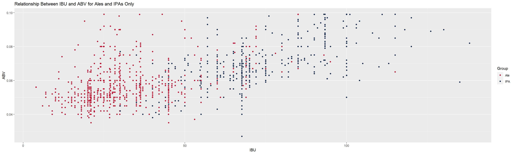
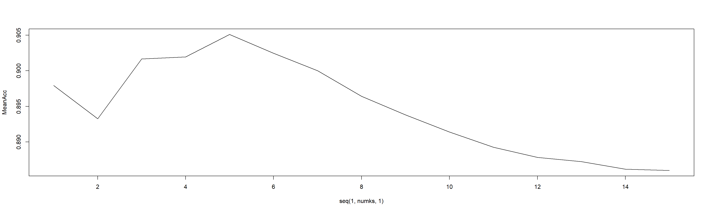
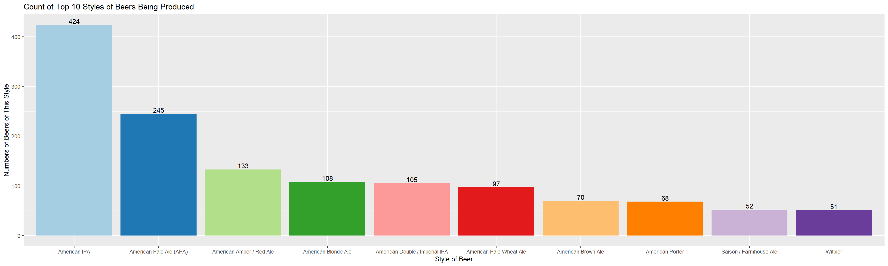
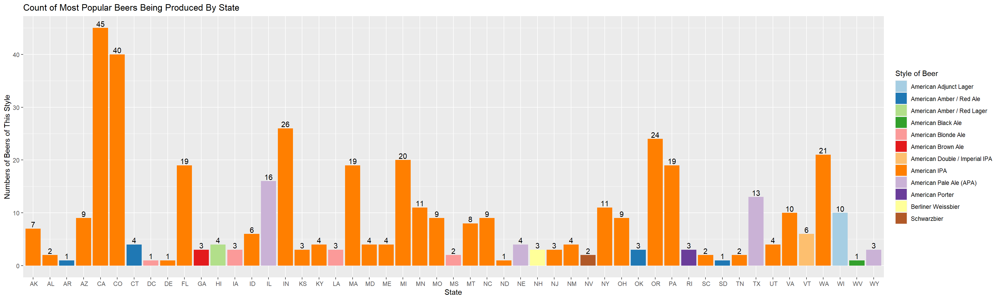

library(dplyr)
library(ggplot2)
library(cowplot)
library(class)
library(caret)
library(e1071)We were asked by our clients, the CEO and CFO of Budweiser, to examine data related to different craft beers and breweries located throughout the United states. The data contains 2,410 beers and 558 breweries. In this presentation we will answer 7 questions that were asked by our clients.
#data import
beers <- read.csv(choose.files(),header = T,sep = ",")
breweries <- read.csv(choose.files(),header = T,sep = ",")How many breweries are present in each state?
The table and chart below provides a brief look at the number of breweries per state and is arranged in alphabetical order.
#create a dataframe to hold the frequency count of breweries in each state
state_brew_count <- as.data.frame(table(breweries$State))
#plot the count
state_count_plot <-state_brew_count %>% ggplot(mapping = aes(x = Var1, y = Freq)) + geom_col(fill = "#13294b") +
geom_text(aes(label = Freq), position=position_dodge(width=0.9), vjust=-0.25) +
labs(title = "Count of Craft Breweries By State", x = "State", y = "Number of Breweries")
#make the table more human readable
names(state_brew_count)[names(state_brew_count) == "Var1"] <- "State"
names(state_brew_count)[names(state_brew_count) == "Freq"] <- "Number of Breweries"
state_brew_count## State Number of Breweries
## 1 AK 7
## 2 AL 3
## 3 AR 2
## 4 AZ 11
## 5 CA 39
## 6 CO 47
## 7 CT 8
## 8 DC 1
## 9 DE 2
## 10 FL 15
## 11 GA 7
## 12 HI 4
## 13 IA 5
## 14 ID 5
## 15 IL 18
## 16 IN 22
## 17 KS 3
## 18 KY 4
## 19 LA 5
## 20 MA 23
## 21 MD 7
## 22 ME 9
## 23 MI 32
## 24 MN 12
## 25 MO 9
## 26 MS 2
## 27 MT 9
## 28 NC 19
## 29 ND 1
## 30 NE 5
## 31 NH 3
## 32 NJ 3
## 33 NM 4
## 34 NV 2
## 35 NY 16
## 36 OH 15
## 37 OK 6
## 38 OR 29
## 39 PA 25
## 40 RI 5
## 41 SC 4
## 42 SD 1
## 43 TN 3
## 44 TX 28
## 45 UT 4
## 46 VA 16
## 47 VT 10
## 48 WA 23
## 49 WI 20
## 50 WV 1
## 51 WY 4state_count_plot
Merge beer data with breweries
#I used left join in case any of the beers didn't have brewery info, but this wasn't an issue. The only columns with NA's were in the IBU and ABV and they were in the data from the beginning
merged_df <- left_join(beers, breweries, by = c("Brewery_id" = "Brew_ID"))
#make column names more readable
names(merged_df)[names(merged_df) == "Name.x"] <- "Beer Name"
names(merged_df)[names(merged_df) == "Name.y"] <- "Brewery Name"
#organize data by state, city, brewery name, and then beer name
final_df <- merged_df[order(merged_df[,10], merged_df[9], merged_df[8], merged_df[1]),]
head(final_df,6)## Beer Name Beer_ID ABV IBU Brewery_id Style Ounces
## 456 Chugach Session Ale 919 0.048 NA 494 Cream Ale 12
## 457 Fairweather IPA 648 0.061 64 494 American IPA 12
## 454 Northern Lights Amber Ale 921 0.050 15 494 American Amber / Red Ale 12
## 455 Polar Pale Ale 920 0.052 17 494 American Pale Ale (APA) 12
## 1175 Amber Ale 2436 0.051 NA 103 American Amber / Red Ale 12
## 1179 King Street Blonde Ale 1665 0.049 NA 103 American Blonde Ale 12
## Brewery Name City State
## 456 Broken Tooth Brewing Company Anchorage AK
## 457 Broken Tooth Brewing Company Anchorage AK
## 454 Broken Tooth Brewing Company Anchorage AK
## 455 Broken Tooth Brewing Company Anchorage AK
## 1175 King Street Brewing Company Anchorage AK
## 1179 King Street Brewing Company Anchorage AKtail(final_df,6)## Beer Name Beer_ID ABV IBU Brewery_id Style
## 286 Bomber Mountain Amber Ale 2484 0.046 20 80 American Amber / Red Ale
## 285 Saddle Bronc Brown Ale 2485 0.048 16 80 American Brown Ale
## 2147 Bomber Mountain Amber Ale (2013) 1200 0.046 20 458 American Amber / Red Ale
## 2148 Indian Paintbrush IPA 1199 0.070 75 458 American IPA
## 2149 Saddle Bronc Brown Ale (2013) 1198 0.048 16 458 English Brown Ale
## 2150 Wagon Box Wheat Beer 1197 0.059 15 458 American Pale Wheat Ale
## Ounces Brewery Name City State
## 286 12 Black Tooth Brewing Company Sheridan WY
## 285 12 Black Tooth Brewing Company Sheridan WY
## 2147 12 The Black Tooth Brewing Company Sheridan WY
## 2148 12 The Black Tooth Brewing Company Sheridan WY
## 2149 12 The Black Tooth Brewing Company Sheridan WY
## 2150 12 The Black Tooth Brewing Company Sheridan WYAddress the missing values in each column.
Once the 2 data sets were joined, we found that there were 62 beers with missing values for ABV and 1005 beers missing data for IBU. There were no missing values in the other columns. To fill in the missing ABV and IBU values we took the average values of ABV and IBU for each style of beers and used these mean values to fill in the missing data. There are 52 beers that continued to have missing IBU values after filling in the mean values. We found that these are either styles that only occur once or twice out of over 2000 different beers or are beers we would expect to be very sweet such as ciders or meads. We felt comfortable that leaving out these beers in our analysis would not greatly skew the data or our results. The data should be used with caution as outliers could greatly affect the mean values and we know that craft breweries do like to experiment with different ABV and IBU values, even within one style of beer.
#find mean ABV and mean IBU for each style and store it in a dataframe
mean_ABV <- final_df %>% filter(!is.na(ABV)) %>% group_by(Style) %>% summarize(meanABV = mean(ABV), count = n()) %>% arrange(meanABV)
mean_IBU <- final_df %>% filter(!is.na(IBU)) %>% group_by(Style) %>% summarize(meanIBU = mean(IBU), count = n()) %>% arrange(meanIBU)
#find median abu and ibu instead and compare it to mean
median_ABV <- final_df %>% filter(!is.na(ABV)) %>% group_by(Style) %>% summarize(medianABV = median(ABV), count = n()) %>% arrange(medianABV)
median_IBU <- final_df %>% filter(!is.na(IBU)) %>% group_by(Style) %>% summarize(medianIBU = median(IBU), count = n()) %>% arrange(medianIBU)
#join the mean ABV rating to the main dataframe and drop count
final_df <- left_join(final_df, mean_ABV, by = "Style")
final_df <- final_df[,-c(12)]
#join the mean IBU rating to the main dataframe and drop count
final_df <- left_join(final_df, mean_IBU, by = "Style")
final_df <- final_df[,-c(13)]
#find row number of na values and store them
abv_na_rows <- which(is.na(final_df$ABV) == T)
#replace NA ABV values with mean ABV values
for(i in abv_na_rows){
final_df$ABV[i] <- final_df$meanABV[i]
}
#find row numbers of na values for ibu and store them
ibu_na_rows <- which(is.na(final_df$IBU) == T)
#replace NA IBU values with mean IBU values
for(i in ibu_na_rows){
final_df$IBU[i] <- final_df$meanIBU[i]
}
#check to ensure that missing IBU values were not caused by code error
missing_IBU <- final_df %>% filter(is.na(final_df$IBU))
table(missing_IBU$Style)##
## American Malt Liquor Braggot Cider Flanders Red Ale
## 1 1 37 1
## Kristalweizen Low Alcohol Beer Mead Rauchbier
## 1 1 5 2
## Shandy
## 3#remove meanABV and meanIBU columns since they are no longer needed
final_df <- final_df[,-c(11, 12)]Plot the median alcohol content and IBU for each state. Plot a bar chart to compare.
We found the median (middle) value for ABV and IBU for each state. The plots below show how each state compares to the others for both their median ABV and IBU.
#create summary tables for median ABV and IBU values
median_ABV <- final_df %>% group_by(State) %>% summarize(medianABV = median(ABV), count = n()) %>% arrange(State)
median_IBU <- final_df %>% filter(!is.na(final_df$IBU)) %>% group_by(State) %>% summarize(medianIBU = median(IBU), count = n()) %>% arrange(State)
#create plots and plot them one on top of the other
median_ABVPlot <- median_ABV %>% ggplot(mapping = aes(x=State, y=medianABV, fill = State)) + geom_col(show.legend = FALSE) + ylab("Median ABV") + ggtitle("Median ABV by State")
median_IBUPlot <- median_IBU %>% ggplot(mapping = aes(x=State, y=medianIBU, fill = State)) + geom_col(show.legend = FALSE) + ylab("Median IBU") + ggtitle("Median IBU by State")
plot_grid(median_ABVPlot, median_IBUPlot, labels = "AUTO", ncol = 1)
Which state has the maximum alcoholic (ABV) beer? Which state has the most bitter (IBU) beer?
We found that the Lee Hill Series Vol. 5 - Belgian Style Quadrupel Ale from Upslope Brewing Company in Boulder, Colorado had the highest ABV at 12.8%. We found that the Bitter Bitch Imperial IPA from Astoria Brewing COmpany in Astoria, Oregon had the highest IBU at 138.
#return row with max value for ABV and IBU
final_df[which.max(final_df$ABV),]## Beer Name Beer_ID ABV IBU Brewery_id
## 315 Lee Hill Series Vol. 5 - Belgian Style Quadrupel Ale 2565 0.128 24 52
## Style Ounces Brewery Name City State
## 315 Quadrupel (Quad) 19.2 Upslope Brewing Company Boulder COfinal_df[which.max(final_df$IBU),]## Beer Name Beer_ID ABV IBU Brewery_id Style Ounces
## 1751 Bitter Bitch Imperial IPA 980 0.082 138 375 American Double / Imperial IPA 12
## Brewery Name City State
## 1751 Astoria Brewing Company Astoria ORComment on the summary statistics and distribution of the ABV variable.
The summary shows that the minimum ABV is 0.1%, the maximum is 12.8%, and the median is at 5.65% which is about what we would expect to see. The mean is at 5.98%, so nearly the same as the median. This shows that there are not very many extreme outliers pulling the data in either direction. The histogram and bar plots show similar results with almost 450 beers at 5% ABV, a little less than 400 beers at around 6% ABV, and then a gradual tapering off towards higher ABV values.
#print summary statitics for ABV column
summary(final_df$ABV)## Min. 1st Qu. Median Mean 3rd Qu. Max.
## 0.00100 0.05000 0.05650 0.05975 0.06700 0.12800#plot ABV distribution using histogram and boxplot and then plot them side by side. We used Budweiser brand colors for these plots.
abv_hist <- final_df %>% ggplot(mapping = aes(x=ABV)) + geom_histogram(fill="#c8102e") + labs(y = "Count of Beers", title = "Distribution of ABV")
abv_box <- final_df %>% ggplot(mapping=aes(y=ABV)) + geom_boxplot(color="#13294b") + labs(title = "Distribution of ABV") + theme(axis.title.x=element_blank(),axis.text.x=element_blank(), axis.ticks.x=element_blank())
plot_grid(abv_hist, abv_box, labels = "AUTO")## `stat_bin()` using `bins = 30`. Pick better value with `binwidth`. ## Question 7 Is there an apparent relationship between the bitterness of the beer and its alcoholic content? Draw a scatter plot. Make your best judgment of a relationship and EXPLAIN your answer.
It appears that there is a weak relationship between IBU and ABV for beers with IBU values between 0 and 50. Most of the beers here are centered around 5% ABV with a slight increase in ABV as IBU increases between 0 and 25 and then staying at a fairly consistent ABV for beers between 25 and 50 IBU. For beers with an IBU between 50 and 100 there appears to be more of a linear relationship with ABV increasing more consistently as IBU increases. This relationship tends to flatten out above 100 IBU, but there are fewer beers at this IBU level and this lack of a relationship may simply be a result of a lack of a data.
Update 2/28/21: The correlation coefficient for IBU vs Alcohol is 0.5959363. This suggests that there is a moderate relationship where increasing the IBU value results in an increase in the ABV. However, r^2 is only 0.35514. That is to say that only 35.51% of the increase in ABV can be explained by an increase in IBU. Looking at the regression line, the slope suggests that for every 1 increase in IBU, ABV only increases 00.03%. While the results may be statistically significant, there is little practical significance. However, outliers can greatly skew correlation values, so values at the far end of the scale may skew the accuracy of this model.
#draw scatter plot and fit regression line for the relationship between ABV and IBU
final_df %>% ggplot(mapping = aes(x = IBU, y = ABV)) + geom_point(postion = "jitter") + geom_smooth(method ="lm") +ggtitle("Relationship Between IBU and ABV")## Warning: Ignoring unknown parameters: postion## `geom_smooth()` using formula 'y ~ x'## Warning: Removed 52 rows containing non-finite values (stat_smooth).## Warning: Removed 52 rows containing missing values (geom_point).
#find the correlation coefficient for IBU and ABV. Cor^2 is the percent of data explained by the relationship between IBU and ABV
cor.test(final_df$IBU, final_df$ABV)##
## Pearson's product-moment correlation
##
## data: final_df$IBU and final_df$ABV
## t = 36.021, df = 2356, p-value < 2.2e-16
## alternative hypothesis: true correlation is not equal to 0
## 95 percent confidence interval:
## 0.5692643 0.6213553
## sample estimates:
## cor
## 0.5959363fit = lm(ABV~IBU, data = final_df, na.rm = T)## Warning: In lm.fit(x, y, offset = offset, singular.ok = singular.ok, ...) :
## extra argument 'na.rm' will be disregardedsummary(fit)##
## Call:
## lm(formula = ABV ~ IBU, data = final_df, na.rm = T)
##
## Residuals:
## Min 1Q Median 3Q Max
## -0.041711 -0.006191 -0.002041 0.003957 0.073938
##
## Coefficients:
## Estimate Std. Error t value Pr(>|t|)
## (Intercept) 4.600e-02 4.409e-04 104.34 <2e-16 ***
## IBU 3.357e-04 9.320e-06 36.02 <2e-16 ***
## ---
## Signif. codes: 0 '***' 0.001 '**' 0.01 '*' 0.05 '.' 0.1 ' ' 1
##
## Residual standard error: 0.01079 on 2356 degrees of freedom
## (52 observations deleted due to missingness)
## Multiple R-squared: 0.3551, Adjusted R-squared: 0.3549
## F-statistic: 1298 on 1 and 2356 DF, p-value: < 2.2e-16Budweiser would also like to investigate the difference with respect to IBU and ABV between IPAs (India Pale Ales) and other types of Ale (any beer with “Ale” in its name other than IPA). You decide to use KNN classification to investigate this relationship. Provide statistical evidence one way or the other. You can of course assume your audience is comfortable with percentages . KNN is very easy to understand conceptually.
We first split the data into trainin and test sets using 70% of the data for training and 30% of the data for testing. We then ran tests using several different values of K and found that a K value of 5 provided the best accuracy. Using IBU and ABV our model could accurately predict whether a beer was an IPA or Ale with approx 91% accuracy. It predicted ales correctly approx 92% of the time and IPAs approx 87% correctly.
#create empty column in the dataframe called Group and fill it with NA
final_df['Group'] <- NA
#find rows with IPA
ipa_rows <- grep("IPA", final_df$Style, ignore.case = T)
#replace NA in group with IPA for IPA rows
for(i in ipa_rows){
final_df$Group[i] <- "IPA"
}
#find rows with Ale
ale_rows <- grep("Ale", final_df$Style, ignore.case = T)
#replace NA in group with Ale for Ale rows (the is.NA is necessary to avoid over writing IPA styles that also had ale in the name)
for(i in ale_rows){
if(is.na(final_df$Group[i])==T){
final_df$Group[i] <- "Ale"
}
}
#Set the remaining NAs in group as Other
final_df$Group[is.na(final_df$Group)] <- "Other"
#create a datafame that only contains beers in the Ale or IPA group
ABV_data <- final_df %>% filter(Group == "Ale" | Group == "IPA")
ABV_data <- ABV_data %>% filter(!is.na(IBU))
#plot the IBU and ABV data for ABV_Data
ABV_data %>% ggplot(mapping = aes(x = IBU, y = ABV, color = Group)) + geom_point(position = "jitter") + ggtitle("Relationship Between IBU and ABV for Ales and IPAs Only") +
scale_color_manual(values = c("#c8102e","#13294b"))
#run several tests to find best value of k
splitPerc = .70
iterations = 500
numks = 15
masterAcc = matrix(nrow = iterations, ncol = numks)
for(j in 1:iterations)
{
accs = data.frame(accuracy = numeric(15), k = numeric(15))
trainIndices = sample(1:dim(ABV_data)[1],round(splitPerc * dim(ABV_data)[1]))
train = ABV_data[trainIndices,]
test = ABV_data[-trainIndices,]
for(i in 1:numks)
{
classifications = knn(train[,c(3,4)],test[,c(3,4)],train$Group, prob = TRUE, k = i)
CM = confusionMatrix(table(classifications,test$Group))
masterAcc[j,i] = CM$overall[1]
}
}
MeanAcc = colMeans(masterAcc)
plot(seq(1,numks,1),MeanAcc, type = "l")
#The best K value was found to be 5. Run 1 knn test with k = 5 and return a sample confusion matrix
classifications = knn(train[,c(3,4)],test[,c(3,4)],train$Group, prob = TRUE, k = 5)
CM = confusionMatrix(table(classifications,test$Group))
CM## Confusion Matrix and Statistics
##
##
## classifications Ale IPA
## Ale 285 28
## IPA 22 138
##
## Accuracy : 0.8943
## 95% CI : (0.863, 0.9205)
## No Information Rate : 0.649
## P-Value [Acc > NIR] : <2e-16
##
## Kappa : 0.766
##
## Mcnemar's Test P-Value : 0.4795
##
## Sensitivity : 0.9283
## Specificity : 0.8313
## Pos Pred Value : 0.9105
## Neg Pred Value : 0.8625
## Prevalence : 0.6490
## Detection Rate : 0.6025
## Detection Prevalence : 0.6617
## Balanced Accuracy : 0.8798
##
## 'Positive' Class : Ale
## #run 100 knn tests with randomly set seed for sampling and knn = 5 to find average accuracy, sensitivity, and specificity
iterations = 100
masterAcc = matrix(nrow = iterations)
masterSen = matrix(nrow = iterations)
masterSpe = matrix(nrow = iterations)
for(j in 1:iterations)
{
set.seed(j)
accs = data.frame(accuracy = numeric(15), k = numeric(15))
trainIndices = sample(1:dim(ABV_data)[1],round(splitPerc * dim(ABV_data)[1]))
train = ABV_data[trainIndices,]
test = ABV_data[-trainIndices,]
classifications = knn(train[,c(3,4)], test[,c(3,4)], train$Group, prob = TRUE, k = 5)
CM = confusionMatrix(table(test$Group, classifications))
masterAcc[j] = CM$overall[1]
masterSen[j] = CM$byClass[1]
masterSpe[j] = CM$byClass[2]
}
MeanAcc = colMeans(masterAcc)
masterSen[is.na(masterSen)] = 0
MeanSen = colMeans(masterSen)
masterSpe[is.na(masterSpe)] = 0
MeanSpe = colMeans(masterSpe)
MeanAcc## [1] 0.9062579MeanSen## [1] 0.9247229MeanSpe## [1] 0.8743315Knock their socks off! Find one other useful inference from the data that you feel Budweiser may be able to find value in. You must convince them why it is important and back up your conviction with appropriate statistical evidence.
For this question we made tables showing how many of each style of beer is being produced and what the most popular style of beer is in each state. We also plotted the number and style of the top 10 beers being produced and the number of beers being produced for the most popular beer style in each state.
#find how much of each style of beer is being produced in each state
#create dataframe to hold table for count of each style of beer for each state
freq_table <- as.data.frame(table(final_df$State, final_df$Style))
#drop empty rows and 0 occurrence styles (these rows are in error, after this step and summing the frequency column, we do return the correct 2,405 rows)
freq_table <- freq_table %>% filter(Var2 != "")
freq_table <- freq_table %>% filter(Freq != 0)
#arrange by state
freq_table <- freq_table %>% arrange(Var1)
#arrange beers by most being produced to least so we can find the most popular
sum_popbeers <- freq_table %>% group_by(Var2) %>% summarize(sumFreq = sum(Freq)) %>% arrange(desc(sumFreq))
#arrange the data for graphing
sum_popbeers$Var2 <- factor(sum_popbeers$Var2, levels = sum_popbeers$Var2[order(-sum_popbeers$sumFreq)])
#graph how many of each of the top 10 beers are being produced
top10beer_plot <- sum_popbeers[1:10,] %>% ggplot(mapping = aes(x = Var2, y = sumFreq, fill = Var2)) + geom_col(show.legend = FALSE) + geom_text(aes(label = sumFreq),position=position_dodge(width=0.9), vjust=-0.25) +
scale_fill_brewer(palette="Paired") + labs(title = "Count of Top 10 Styles of Beers Being Produced", x = "Style of Beer", y = "Numbers of Beers of This Style")
#create dataframe where each row reprents most popular beer style for each state
mostpopbeer_state <- freq_table %>% group_by(Var1) %>% slice(which.max(Freq))
#graph most popular beers by state
beer_by_state_plot <- mostpopbeer_state %>% ggplot(mapping = aes(x = Var1, y = Freq, fill = Var2)) + geom_col() + geom_text(aes(label = Freq), position=position_dodge(width=0.9), vjust=-0.25) +
scale_fill_brewer(palette="Paired") + labs(title = "Count of Most Popular Beers Being Produced By State", x = "State", y = "Numbers of Beers of This Style", fill = "Style of Beer")
#make table column names more human friendly
names(sum_popbeers)[names(sum_popbeers) == "Var2"] <- "Style of Beer"
names(sum_popbeers)[names(sum_popbeers) == "sumFreq"] <- "Number Being Produced"
sum_popbeers## # A tibble: 99 x 2
## `Style of Beer` `Number Being Produced`
## <fct> <int>
## 1 American IPA 424
## 2 American Pale Ale (APA) 245
## 3 American Amber / Red Ale 133
## 4 American Blonde Ale 108
## 5 American Double / Imperial IPA 105
## 6 American Pale Wheat Ale 97
## 7 American Brown Ale 70
## 8 American Porter 68
## 9 Saison / Farmhouse Ale 52
## 10 Witbier 51
## # ... with 89 more rowsnames(mostpopbeer_state)[names(mostpopbeer_state) == "Var1"] <- "State Name"
names(mostpopbeer_state)[names(mostpopbeer_state) == "Var2"] <- "Style of Beer"
names(mostpopbeer_state)[names(mostpopbeer_state) == "Freq"] <- "Number Being Produced"
mostpopbeer_state## # A tibble: 51 x 3
## # Groups: State Name [51]
## `State Name` `Style of Beer` `Number Being Produced`
## <fct> <fct> <int>
## 1 " AK" American IPA 7
## 2 " AL" American IPA 2
## 3 " AR" American Amber / Red Ale 1
## 4 " AZ" American IPA 9
## 5 " CA" American IPA 45
## 6 " CO" American IPA 40
## 7 " CT" American Amber / Red Ale 4
## 8 " DC" American Blonde Ale 1
## 9 " DE" American IPA 1
## 10 " FL" American IPA 19
## # ... with 41 more rowstop10beer_plot
beer_by_state_plot
In this analysis we reviewed 2,410 beers produced by 558 breweries around the United States. We plotted the number of breweries in each state and created a table showing those numbers as well. We filled in the missing IBU and ABV data with the mean IBU and ABV for each style so that we could perform further analysis. We then plotted the median ABV and IBU for each state. We found that Colorado produced the beer with the highest ABV and that Oregon produced the beer with the highest IBU. We showed the distribution of ABV and found that the median ABV is 5.65% with the minimum at 0.1% and the maximum at 12.8%. We found that there may be a weak relationship between ABV and IBU, but mostly for beers with an IBU between 50 and 100. Using kNN we were able to show that knowning the ABV and IBU of a given beer allowed us to predict whether that beer was an IPA or an Ale with roughly 91% accuracy. We then went on to plot the most frequently produced style of beer for each state, so that Budweiser can see what is the most popular beer style in their markets.